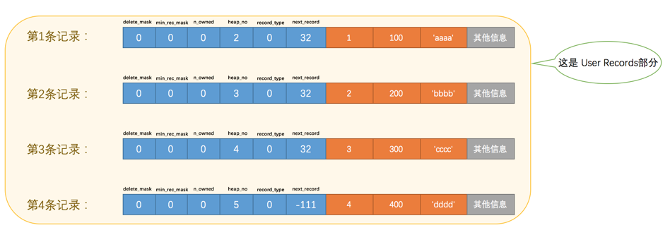
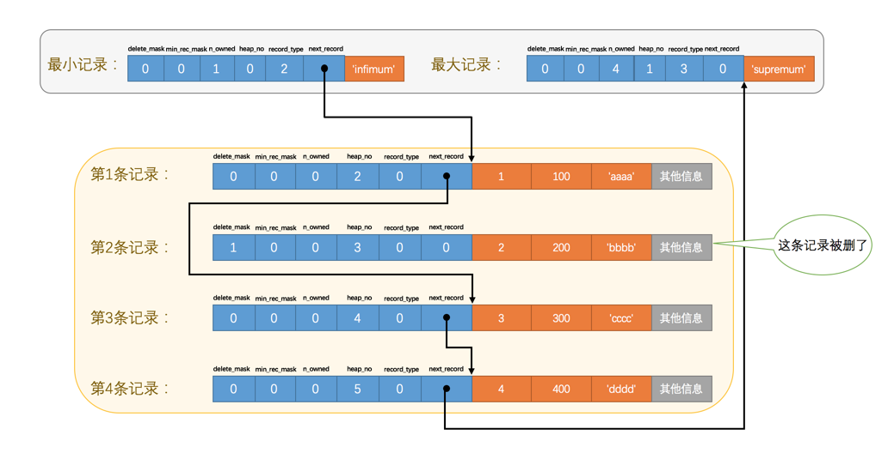
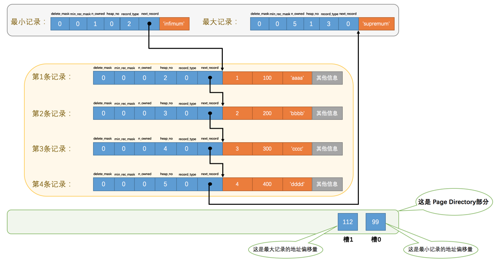
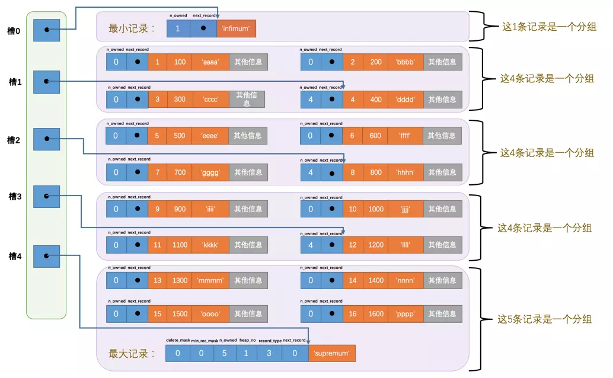

InnoDB 数据页结构 #
InnoDB 管理存储空间的基本单位是页，一个页的大小一般是 16KB。InnoDB 设计了多种不同类型的页，比如存放表空间头部信息的页，
存放 Insert Buffer 信息的页等等。我们聚焦的是那些存放我们表中记录的那种类型的页，官方称这种存放记录的页为索引（INDEX）页。我们
暂叫做数据页吧。
数据页结构 #
一个 InnoDB 数据页的存储空间大致被划分成了 7 个部分：
| 名称 | 中文名 | 占用空间 | 简单描述 |
|---|---|---|---|
File Header |
文件头部 | 38 字节 | 页的一些通用信息 |
Page Header |
页面头部 | 56 字节 | 数据页专有的一些信息 |
Infimum + Supremum |
最小记录和最大记录 | 26 字节 | 两个虚拟的行记录 |
User Records |
用户记录 | 不确定 | 实际存储的行记录内容 |
Free Space |
空闲空间 | 不确定 | 页中尚未使用的空间 |
Page Directory |
页面目录 | 不确定 | 页中的某些记录的相对位置 |
File Trailer |
文件尾部 | 8 字节 | 校验页是否完整 |
记录在页中的存储 #
我们自己存储的记录会按照我们指定的行格式存储到 User Records 部分。但是在一开始生成页的时候，其实并没有 User Records 这个部分，每当插入
一条记录，都会从 Free Space 部分，也就是尚未使用的存储空间中申请一个记录大小的空间划分到 User Records 部分，当 Free Space 部分的
空间全部被 User Records 部分替代掉之后，也就意味着这个页使用完了，如果还有新的记录插入的话，就需要去申请新的页了。

记录头信息 #
以 compact 格式为例：

插入四条记录：
mysql> INSERT INTO page_demo VALUES(1, 100, 'aaaa'), (2, 200, 'bbbb'), (3, 300, 'cccc'), (4, 400, 'dddd');
Query OK, 4 rows affected (0.00 sec)
Records: 4 Duplicates: 0 Warnings: 0

delete_mask #
这个属性标记着当前记录是否被删除，占用 1 个二进制位，为 1 的时候代表记录被删除掉了。
被删除的记录还在页中么？
是的，你以为它删除了，可它还在真实的磁盘上。这些被删除的记录之所以不立即从磁盘上移除，是因为移除它们之后把其他的记录在磁盘上重新排列需要性能消耗， 所以只是打一个删除标记而已，所有被删除掉的记录都会组成一个所谓的垃圾链表，在这个链表中的记录占用的空间称之为所谓的可重用空间，之后如果有 新记录插入到表中的话，可以把这些被删除的记录占用的存储空间覆盖掉。
heap_no #
表示当前记录在本页中的位置。注意上面插入 4 条记录的示意图，4 条记录的位置分别是 2、3、4、5。
那么 0 和 1 去哪了？
因为 InnoDB 给每个页都自动添加了两个记录。这两个记录称为伪记录或者虚拟记录。这两个分别是最小记录，最大记录。
两条记录的构造十分简单，都是由 5 字节大小的记录头信息和 8 字节大小的一个固定的部分组成：

它们并不存放在页的 User Records 部分，被单独放在一个称为 Infimum + Supremum 的部分。
next_record #
表示从当前记录的"真实数据"到下一条记录的"真实数据"的地址偏移量。如，第一条记录的 next_record 值为 32，意味着从第一条记录的真实数据的
地址处向后找 32 个字节便是下一条记录的真实数据。这其实是个链表。“下一条记录” 指得并不是按照我们插入顺序的下一条记录，而是按照主键值由小到
大的顺序的下一条记录。下图箭头来替代一下 next_record 中的地址偏移量：

记录按照主键从小到大的顺序形成了一个单链表。最大记录的 next_record 的值为 0。
如果删掉第 2 条记录：

- 第 2 条记录的
delete_mask值设置为 1。 - 第 2 条记录的
next_record值变为了 0，意味着该记录没有下一条记录了。 - 第 1 条记录的
next_record指向了第 3 条记录。 - 最大记录的
n_owned值从 5 变成了 4。
对页中的记录做任何的增删改操作，InnoDB 始终会维护一条记录的单链表，链表中的各个节点是按照主键值由小到大的顺序连接起来的。
next_record 指针为什么要指向记录头信息和真实数据之间的位置？ #
因为这个位置，向左读取就是记录头信息，向右读取就是真实数据。
并且变长字段长度列表、NULL 值列表中的信息都是逆序存放，这样可以使记录中位置靠前的字段和它们对应的字段长度信息在内存中的距离更近，可能会提高 高速缓存的命中率。
Page Directory（页目录） #
如何根据主键值查询页中的记录？
SELECT * FROM page_demo WHERE c1 = 3;
因为记录在页中按照主键值由小到大顺序串联成了一个单链表，那么就可以从 Infimum 记录（最小记录）开始遍历链表，当找到主键值大于你想要查找的主键值时， 就可以停止了。但是这种方法，如果记录多了，效率及会很差。
InnoDB 的 Page Directory，是一个类似目录的设计：
- 将所有正常的记录（包括最大和最小记录，不包括标记为已删除的记录）划分为几个组。
- 每个组的最后一条记录（也就是组内最大的那条记录）的头信息中的
n_owned属性表示该记录拥有多少条记录，也就是该组内共有几条记录。 - 将每个组的最后一条记录的地址偏移量单独提取出来按顺序存储到靠近页的尾部的地方，这个地方就是所谓的 Page Directory，也就是页目录。页面目 录中的这些地址偏移量被称为槽（Slot），所以这个页面目录就是由槽组成的。
比如 page_demo 表中共有 6 条记录，InnoDB 会把它们分成两组，第一组中只有一个最小记录，第二组中是剩余的 5 条记录：

注意几点：
- 最小记录的
n_owned值为 1，这个分组中只有 1 条记录，也就是最小记录本身。 - 最大记录的
n_owned值为 5，这个分组中有 5 条记录，包括最大记录本身还有我们自己插入的 4 条记录。
最小记录所在的分组只能有 1 条记录，最大记录所在的分组拥有的记录条数只能在 1~8 条之间，剩下的分组中记录的条数范围只能在是 4~8 条之间。 所以分组是按照下边的步骤进行的：
- 初始情况下一个数据页里只有最小记录和最大记录两条记录，它们分属于两个分组。
- 之后每插入一条记录，都会从页目录中找到主键值比本记录的主键值大并且差值最小的槽，然后把该槽对应的记录的
n_owned值加 1，表示本组内又添加 了一条记录，直到该组中的记录数等于 8 个。 - 在一个组中的记录数等于 8 个后再插入一条记录时，会将组中的记录拆分成两个组，一个组中 4 条记录，另一个 5 条记录。这个过程会在页目录中新增一个 槽来记录这个新增分组中最大的那条记录的偏移量。
如果现在再往 page_demo 表中添加 12 条记录：

各个槽代表的记录的主键值都是从小到大排序的，所以我们可以使用所谓的二分法来进行快速查找。5 个槽的编号分别是：0、1、2、3、4，所以初始情况
下最低的槽就是 low=0，最高的槽就是 high=4。比如找到主键值为 6 的记录，过程是这样的：
- 计算中间槽的位置：
(0+4)/2=2，所以查看槽 2 对应记录的主键值为 8，又因为8 > 6，所以设置high=2，low 保持不变。 - 重新计算中间槽的位置：
(0+2)/2=1，所以查看槽 1 对应的主键值为 4，又因为4 < 6，所以设置low=1，high 保持不变。 high - low的值为 1，所以确定主键值为 6 的记录在槽 2 对应的组中。槽 2 对应的记录是主键值为 8 的记录（改组的最大记录），但是槽 1 对 应的记录（主键值为 4），该条记录的下一条记录就是槽 2 中主键值最小的记录，该记录的主键值为 5。所以可以从这条主键值为 5 的记录出发，遍历槽 2 中的各 条记录。
Page Header（页面头部） #
Page Header 占用固定的 56 个字节，专门存储各种状态信息，比如本页中已经存储了多少条记录，第一条记录的地址是什么，页目录中存储了多少个槽等等。
File Header（文件头部） #
不同类型的页都会以 File Header 作为第一个组成部分，描述了一些针对各种页都通用的一些信息，比方说这个页的编号是多少，它的上一个页、下一个页是谁等等。 File Header 占用固定的 38 个字节。
| 名称 | 占用空间大小 | 描述 |
|---|---|---|
| FIL_PAGE_SPACE_OR_CHKSUM | 4字节 | 页的校验和（checksum值） |
| FIL_PAGE_OFFSET | 4字节 | 页号 |
| FIL_PAGE_PREV | 4字节 | 上一个页的页号 |
| FIL_PAGE_NEXT | 4字节 | 下一个页的页号 |
| FIL_PAGE_LSN | 8字节 | 页面被最后修改时对应的日志序列位置（英文名是：Log Sequence Number） |
| FIL_PAGE_TYPE | 2字节 | 该页的类型 |
| FIL_PAGE_FILE_FLUSH_LSN | 8字节 | 仅在系统表空间的一个页中定义，代表文件至少被刷新到了对应的LSN值 |
| FIL_PAGE_ARCH_LOG_NO_OR_SPACE_ID | 4字节 | 页属于哪个表空间 |
几个重要的部分：
- FIL_PAGE_SPACE_OR_CHKSUM，当前页面的校验和。在比较两个很长的字节串之前先比较这两个长字节串的校验和，如果校验和都不一样两个长字节串肯 定是不同的，所以省去了直接比较两个比较长的字节串的时间损耗。
- FIL_PAGE_OFFSET，每一个页都有一个唯一的页号。
- FIL_PAGE_TYPE，页的类型。
- FIL_PAGE_PREV 和 FIL_PAGE_NEXT，代表本页的上一个和下一个页的页号。这样通过建立一个双向链表把许许多多的页就都串联起来了，而无需这 些页在物理上真正连着。并不是所有类型的页都有上一个和下一个页的属性，但是**数据页*（也就是类型为 FIL_PAGE_INDEX 的页）是有这两个属性的，所 以所有的数据页其实是一个双向链表。
File Trailer #
用于检验页是否完整的部分，占用固定的 8 个字节。File Trailer 也是所有类型的页通用的。
- 前 4 个字节代表页的校验和，和 File Header 中的校验和相对应的。每当一个页面在内存中修改了，在同步之前就要把它的校验和算出来，因 为 File Header 在页面的前边，所以校验和会被首先同步到磁盘，当完全写完时，校验和也会被写到页的尾部，如果完全同步成功，则页的首部和尾部的校验和应 该是一致的。如果写了一半儿断电了，那么在 File Header 中的校验和就代表着已经修改过的页，而在 File Trailer 中的校验和代表着原先的页，二者不同 则意味着同步中间出了错。
- 后 4 个字节代表页面被最后修改时对应的日志序列位置，也是为了校验页的完整性的。